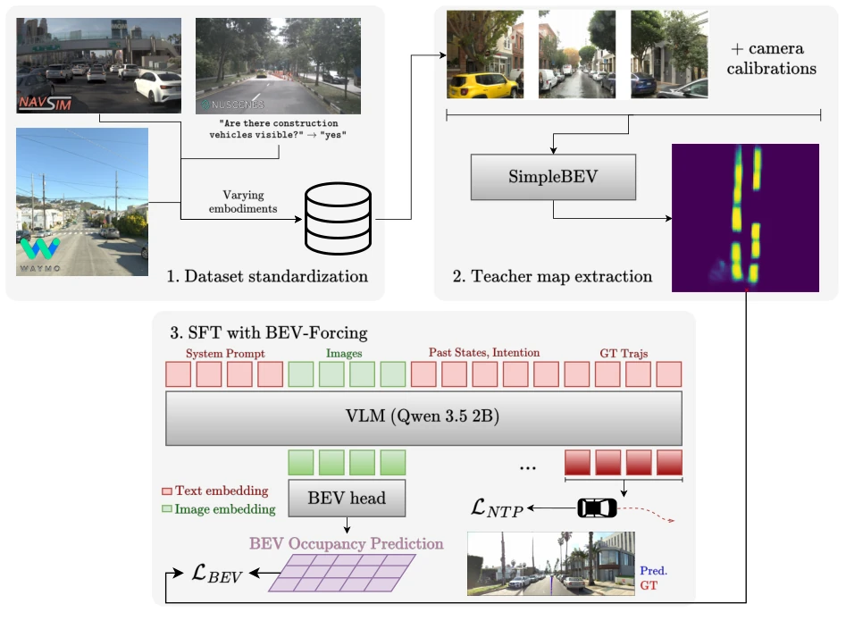
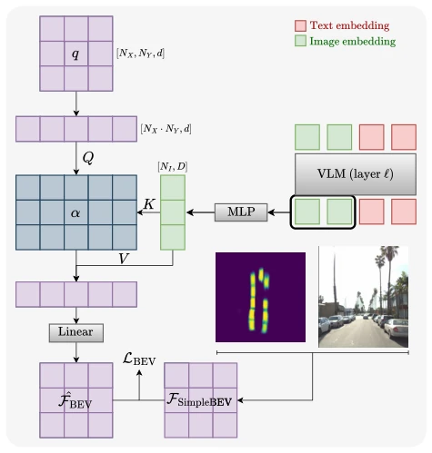
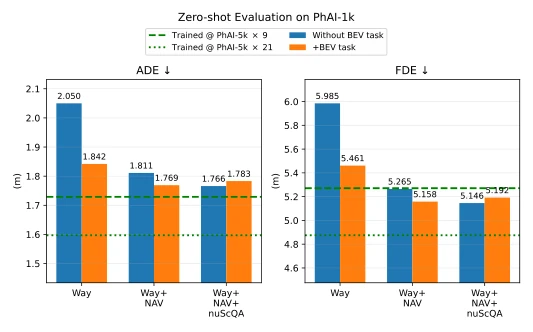
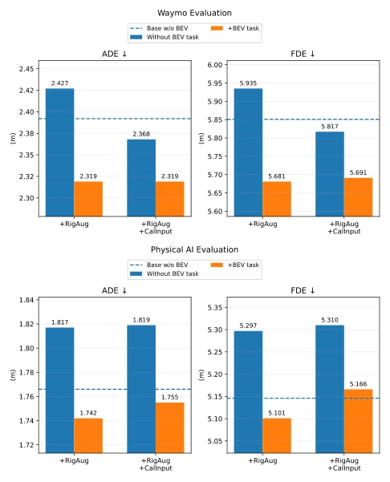

这篇论文给自动驾驶 VLA 的“跨具身迁移”难题开了个药方，叫 BEV-Forcing。说白了，就是强行让模型学鸟瞰图里的物体布局，像个严厉的老师盯着学生画地图。亮点是推理时没额外成本，毕竟辅助头能直接砍掉，生产部署友好。但毒舌一点看，这招在数据量小的时候是神技，数据一多就变“鸡肋”，作者自己都承认多样性增加后收益递减。这说明啥？光靠加辅助任务硬灌几何知识，不如直接堆数据来得实在，或者至少得承认这种“正则化”手段在大数据时代可能只是过渡品。不过，能在不依赖 LiDAR 标签的情况下搞定空间感知，还是值得给个好评，毕竟收集 3D 数据太贵了。对于追求零样本迁移的研究者来说，这是个不错的基线，但别指望它能解决所有几何理解问题。
This paper offers a remedy for the "cross-embodied transfer" challenge in autonomous driving VLA, called BEV-Forcing. Simply put, it forcibly makes the model learn the object layout in the bird's-eye view, like a strict teacher watching a student draw a map. The highlight is no extra cost during inference, since the auxiliary head can be directly removed, making it production deployment-friendly. But to be a bit critical, this trick is a god-tier skill when data volume is small, but becomes of marginal utility when data increases; the authors themselves admit diminishing returns after diversity increases. What does this mean? Relying solely on adding auxiliary tasks to force-feed geometric knowledge is less practical than simply stacking data, or at least one must admit that this "regularization" method might just be a transitional product in the big data era. However, being able to handle spatial perception without relying on LiDAR labels is still worth a good review, since collecting 3D data is too expensive. For researchers pursuing zero-shot transfer, this is a decent baseline, but don't expect it to solve all geometric understanding problems.
Although autonomous driving VLA models have strong semantic understanding, they struggle significantly when facing "embodied" environments with different camera layouts, and spatial geometric information cannot be zero-shot transferred [1]. Existing research mostly trains on single datasets, or relies on multi-embodied pretraining like in the robotic manipulation field, but the autonomous driving field has few public datasets and large layout differences [4, 6]. Simply stacking datasets cannot guarantee performance improvement, and may even lead to semantic capability decline due to catastrophic forgetting [10]. More critically, most work ignores cross-embodied zero-shot evaluation, causing model performance to collapse on unseen camera rigs. This paper aims to explore how to maintain geometric perception through auxiliary tasks as the number of training embodied agents increases, solving the pain point of "understanding semantics but confused about space", and validating the effectiveness of auxiliary tasks during data expansion.
The overall process is based on Qwen 3.5 2B as the backbone, with actions represented as text trajectory points. The core innovation is the BEV-Forcing auxiliary task. First, use the dedicated BEV model SimpleBEV [11] to generate occupancy maps as teacher signals. Then, extract image embeddings from the target layers of the backbone network, project them through a low-capacity BEV Head (only Cross-Attention) and cross-attend to randomly initialized queries, outputting occupancy logits. During training, supervise these logits with binary cross-entropy loss L_BEV, weighted summed with the standard NTP loss. During inference, directly remove the BEV Head, zero cost. Additionally, to maintain language understanding, VQA tasks are added for joint training. Regarding data standardization, unified the input formats of datasets such as WOD-E2E, NAVSIM, including tri-camera images and calibration parameters. The key lies in the BEV Head capacity being limited, forcing image features to encode spatial information, rather than relying on the Head's own computation.

Figure 1. Illustration of BEV-Forcing, performing supervised fine-tuning (SFT) on a planning sample (analogous for VQA samples). After unifying various end-to-end datasets into a common format, we extract teacher occupancy maps from a specialized BEV model, SimpleBEV [11] in our case. These are used as the ground-truth for BEV-Forcing, which supervises last-layer image hidden states with extracted teacher maps, transferring ground plane object position awareness into the backbone.

Figure 2. Illustration of the BEV head. Randomly initialized queries attend to image embeddings to output occupancy maps of vehicles in the scene. The low capacity of the BEV head forces image features that are used for trajectory planning to contain in- formation related to surrounding objects’ position in space.
Experiments are conducted on WOD-E2E, NAVSIM, nuScenes, and Physical AI, with zero-shot evaluation on KITScenes LongTail. Metrics include ADE, FDE, RFS, MMS. Results show that when trained only on WOD-E2E, BEV-Forcing reduces ADE by 10.1%, significantly improving zero-shot transfer capability. But as training embodied agents increase (e.g., adding NAVSIM), returns diminish, even appearing as negative returns. Ablation experiments show that BEV Head capacity should not be too large, otherwise it weakens the backbone's ability to encode spatial information. Meanwhile, the BEV task enhances the robustness effect of image augmentation and calibration parameter injection. Compared to Spatial Forcing [19], BEV-Forcing is superior on both ADE/FDE.

Figure 3. Performance on PhAI-1k validation set after training on different dataset combinations, with and without BEV task. Train- ing on WOD-E2E only, the BEV task gives large improvements on zero-shot transfer. Introducing NAVSIM and subsequently nuSce- nesQA into training data also substantially helps zero-shot trans- fer, with benefits overlapping with those of BEV-Forcing as train- ing variability increases.
其他图片Other Figures

Figure 5. Interaction of BEV task with common techniques for dataset robustness, all trainings on WOD-E2E + NAVSIM + nuScenes-QA. As before, runs using the BEV task are able to im- prove in-dataset WOD-E2E validation results. For zero-shot trans- fer on Physical AI-1k, common robustness techniques do not lead to improvements unless paired with the BEV task, indicating its usefulness in facilitating learning a unified interface from the in- creased input signals.